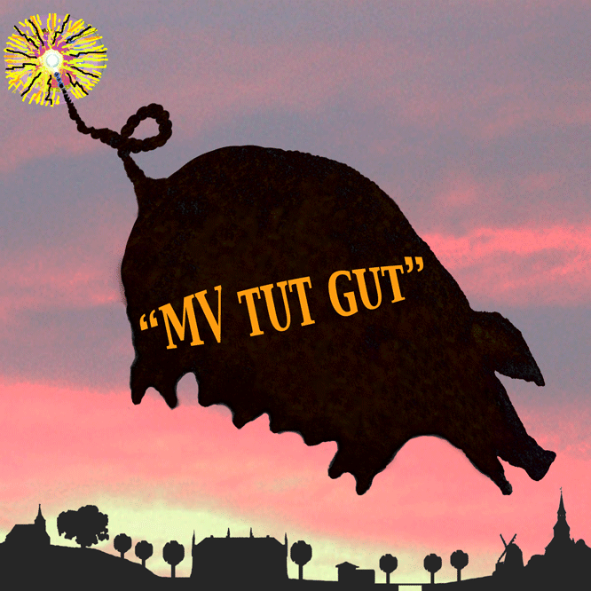

Ich eröffne den Diskussionsprozess mit einer Frage, in der Hoffnung, dass diese etwas zum Verständnis der vorgegebenen Strukturierung beitragen kann:
Egal, ob im öffentlich rechtlichen Fernsehen "Die Jagd nach Land: Das globale Geschäft mit fruchtbarem Boden" oder "Schweine für den Müllcontainer - Warum es zu viel Fleisch gibt" oder eine anderer Bericht zur real existierenden Landwirtschaft auch u. gerade in MV gesendet wird, die eine Frage bleibt:
wie kann die Regierung MVs ohne rot zu werden den Slogan "MV tut gut" hochhalten?
Und wenn diese drei Worte auch bei der Expertenkommission nicht nur als Titel der Arbeitsgruppe 1 herhalten müssen, sondern auch noch mit der Aussage untersetzt sind, der ländliche Raum sei keine Problemzone, dann weiß man in etwa, wohin der Hase zu laufen hat.
Denn der Titel stimmt: "MV tut gut", z.B. dem Schweineproduzenten Straathof, dem die zu mehr als 50% landeseigene LMS seine Ferkelfabrik gegen den Willen der Einwohner zur Genehmigung gebracht hat.
Die Genehmigung der Ferkelfabrik wurde ausdrücklich mit dem Verweis auf die Imagekampagne "MV tut gut" erteilt.
Dadurch wurde diese Region zu einer Problemzone, in der sich nicht nur der soziale Frieden gewandelt hat, sondern vor allem der Glaube an die Demokratie baden gegangen ist. http://www.buergerforum-ueberwald.de/t978f167-Agrarindustrielle-Verflechtungen-in-der-Politik.html[Anhang: <!-- ia0 -->saubombe1_03.gif<!-- ia0 -->]
MV könnte guttun, wenn...
ja, wenn man akzeptiert, dass so einiges nicht gut tut,
was erst dann auch zu verändern wäre.
